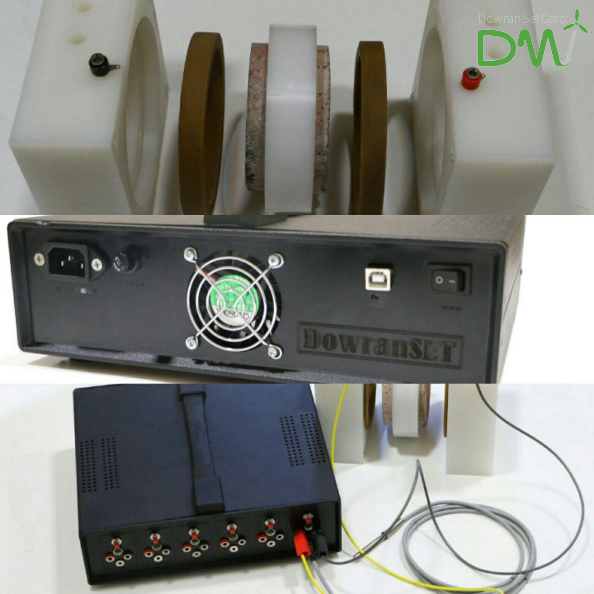

Rapid Chloride Migration Test Measurement System
RCPT measurement device for building-construction and concrete-testing applications.
Technical Highlights
- Researched and developed RCPT device concepts.
- Prepared and selected the bill of materials.
- Implemented CC-CV control algorithms and improved measurement precision.
Increased current measurement precision to 1 mA and voltage measurement precision to +/-0.1 V.